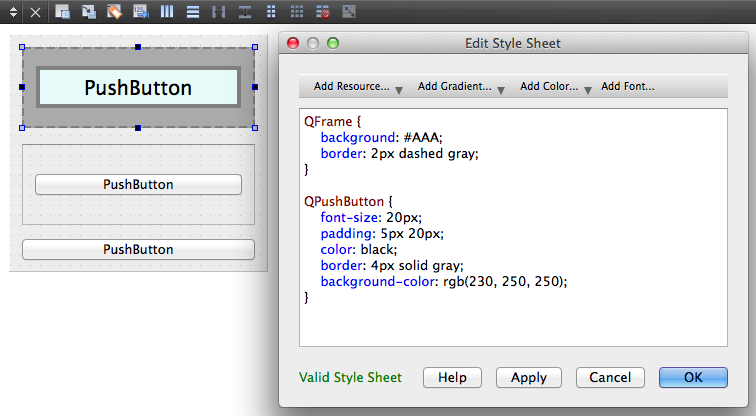

前一章节我们已经知道怎么写简单的 QSS 了，但是，应该把它们放在什么地方才能生效呢？
加载 QSS 有三种方式:
- Widget 的对象调用
setStyleSheet(qss) 函数加载 QSS，QSS 的作用域是 widget 自己和它的所有子 widget
- QApplication 的对象
setStyleSheet(qss) 函数加载 QSS，QSS 的作用域是整个程序里的所有 widget
- 在 Qt Designer 的
Change styleSheet... 打开的 QSS 编辑器中添加 QSS，在哪个 widget 上添加的，QSS 的作用域是那个 widget 自己和它的所有子 widget，其实和 1 是一样的，只不这里过是在 Qt Designer 里添加，不是我们自己手动写 C++ 代码添加而已。打开 ui 文件生成的代码(ui_xxxx.h)，可以看到里面也是自动生成代码调用 setStyleSheet(qss) 添加 QSS 的，和我们写代码添加没有区别，只是在 Qt Designer 里添加的话，有时候方便一些，也可以实时看到 QSS 的效果
1
2
3
4
5
6
7
8
9
10
11
12
13
14
15
16
17
18
19
20
21
22
23
24
25
26
27
28
29
30
31
32
33
34
35
36
37
38
39
40
41
42
43
44
45
46
47
48
49
50
51
52
53
54
55
56
57
58
59
| #include <QApplication>
#include <QVBoxLayout>
#include <QWidget>
#include <QFrame>
#include <QPushButton>
int main(int argc, char *argv[]) {
QApplication app(argc, argv);
QFrame *topFrame = new QFrame();
topFrame->setFrameShape(QFrame::StyledPanel);
topFrame->setFrameShadow(QFrame::Raised);
QPushButton *topButton = new QPushButton("Top Button");
QVBoxLayout *topLayout = new QVBoxLayout();
topLayout->addWidget(topButton);
topFrame->setLayout(topLayout);
QFrame *middleFrame = new QFrame();
middleFrame->setFrameShape(QFrame::StyledPanel);
middleFrame->setFrameShadow(QFrame::Raised);
QPushButton *middleButton = new QPushButton("Middle Button");
QVBoxLayout *middleLayout = new QVBoxLayout();
middleLayout->addWidget(middleButton);
middleFrame->setLayout(middleLayout);
QPushButton *bottomButton = new QPushButton("Bottom Button");
QWidget *mainWidget = new QWidget();
QVBoxLayout *mainLayout = new QVBoxLayout();
mainWidget->setWindowTitle("加载 QSS");
mainLayout->addWidget(topFrame);
mainLayout->addWidget(middleFrame);
mainLayout->addWidget(bottomButton);
mainWidget->setLayout(mainLayout);
mainWidget->show();
QString qss = "QFrame {"
" background: #AAA;"
" border: 2px dashed gray;"
"}"
"QPushButton {"
" font-size: 20px;"
" padding: 5px 20px;"
" color: black;"
" border: 4px solid gray;"
" background-color: rgb(230, 250, 250);"
"}";
topFrame->setStyleSheet(qss);
return app.exec();
}
|
调用 topFrame->setStyleSheet(qss)，QSS 的作用域是 topFrame 和它的的子 widget topButton, 而 middleFrame，middleButton 和 bottomButton 不受影响，效果如图：
注：topFrame->setStyleSheet("border: 3px solid gray") 这里的 QSS 没有选择器，则 topFrame 和它的所有子 widget 都会使用 QSS border: 3px solid gray 设置 border。
QApplication 加载 QSS
把上面程序中的 topFrame->setStyleSheet(qss) 换成 app.setStyleSheet(qss)，则 QSS 的作用域是整个程序，所有 QFrame 和 QPushButton 都会受到影响，效果如图，所有的 QFrame 和 QPushButton 的样式改变了：
Qt Designer 里写 QSS
- 在 QWidget 里按上面的程序放置 2 个 QFrame 和 3 个 QPushButton
- 在最外层的 QWidget 上单击右键，然后点击
Change styleSheet...
- 在弹出的窗口里添加上面的 QSS，然后点击
Apply 按钮，可以看到 QSS 生效了：
- 如果在 topFrame 上单击右键，然后点击
Change styleSheet...，添加 QSS，那么 QSS 的作用域为 topFrame 和它的子 widget：

从文件中加载 QSS
如果把 QSS 写死在代码里，修改 QSS 的时候就需要修改程序的源码，就不得不重新编译，打包发布程序，效率低，不灵活，在实际项目里推荐把 QSS 放在文件里，然后读取 QSS 文件内容到程序，调用 setStyleSheet(qss) 加载 QSS，就像下面的代码片段所示：
1
2
3
4
5
6
7
8
9
10
11
12
13
14
15
16
17
| int main(int argc, char *argv[]) {
QApplication app(argc, argv);
...
...
mainWidget->show();
{
QFile file("/Users/Biao/Desktop/style.qss");
file.open(QIODevice::ReadOnly | QIODevice::Text);
QString qss(file.readAll());
app.setStyleSheet(qss);
}
return app.exec();
}
|
QSS 放在文件里的好处是当 QSS 变化后不需要修改源码，重启程序就可以看到修改后的效果。QSS 变化后也可以不用重启程序，重新调用 qApp->setStyleSheet(qss) 再加载一次 QSS 就可以了（qApp 是 QApplication 的全局唯一对象，和上面的 app 是同一个对象）：
1
2
| qDebug() << qApp << ", " << (&app);
|
重新加载 QSS 的方式很多，可以在快捷键的槽函数里加载，也可以点击菜单项或者点击按钮加载，可以是任何方式，只要能加载就可以，管他黑猫白猫，抓住耗子就是好猫。
小技巧
我会常用下面的方式来使用 QSS:
- 先在 Qt Designer 里写 QSS，能实时的看到效果，满意后把这些 QSS 保存到文件里，然后删除 Qt Designer 里的 QSS
- 从文件读取 QSS 赋值给 QString 变量
- 用 qApp 加载从文件读取到的 QSS
我在项目中使用下面的函数来加载 QSS:
1
2
3
4
| class UiUtil {
public:
static void loadQss();
}
|
1
2
3
4
5
6
7
8
9
10
11
12
13
14
15
16
17
18
19
20
21
22
23
24
25
26
27
28
29
| #include <QFile>
#include <QStringList>
#include <QDebug>
#include <QApplication>
void UiUtil::loadQss() {
QStringList qssFileNames = Singleton<Config>::getInstance().getQssFiles();
QString qss;
foreach (QString name, qssFileNames) {
qDebug() << QString("=> 加载 QSS 文件 %1").arg(name);
QFile file(name);
if (!file.open(QIODevice::ReadOnly)) {
qDebug() << QString("打开 QSS 文件 %1 失败");
continue;
}
qss.append(file.readAll()).append("\n");
}
if (!qss.isEmpty()) {
qApp->setStyleSheet(qss);
}
}
|
UiUtil::loadQss() 可以在运行时多次调用，这样就能在程序运行的时候修改 QSS，然后加载，看到修改后的效果
把下面的代码放到 main() 函数里，当按下快捷键 ctrl + l 后就会加载一次 QSS，实现 QSS 的动态加载
1
2
3
4
5
6
| MainWindow mainWindow;
QShortcut *shortcut = new QShortcut(QKeySequence(Qt::CTRL + Qt::Key_L), &mainWindow);
QObject::connect(shortcut, &QShortcut::activated, [] {
UiUtil::loadQss();
});
|